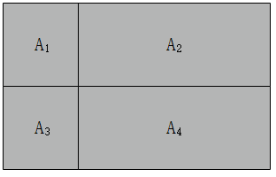
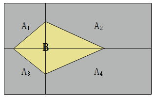

Naive Bayes Classification
被称作“Naive”的原因：整个形式化过程中只做最原始、最简单的假设。
朴素贝叶斯
优点：在数据较少时仍然有效，可以处理多分类问题
缺点：对于输入数据的构成形式较为敏感
适用数据类型：标称型数据
- 标称型数据：目标变量只在有限目标集中取值，标称型目标变量主要用于分类
- 数值型数据：目标变量从无限的数值集合中取值，数值型目标变量主要用于回归分析
贝叶斯决策理论
- 核心思想：选择高概率对应的类别作为样本的类别
概率与条件概率
- 条件概率公式：$P(B|A)=\frac{p(AB)}{P(A)}$
- 依据条件概率公式，可得贝叶斯概率公式：$P(B|A)=\frac{P(A|B)P(B)}{P(A)}$
使用条件概率进行分类
- 需要比较的是$p(c_1|x,y)$和$p(c_2|x,y)$，应用贝叶斯概率公式可得$p(c_i|x,y)=\frac{p(x,y|c_i)p(c_i)}{p(x,y)}$
- 选择使该概率值最大的类别作为样本的类别
朴素贝叶斯分类器
假设：样本中每个特征之间相互独立
依据假设，可得：$p(x,y|c_i)=p(x|c_i)p(y|c_i)$
从而：$p(x,y|c_i)p(c_i)=p(x|c_i)p(y|c_i)p(c_i)$
根据每个类别对应概率值的大小来确定样本所属的概率，所以为了简化计算，只比较上式即可
联合概率与全概率公式
完备事件组：如果$A_1\cup A_2\cup ···\cup A_n=\Omega$，且$A_i\cap A_j=\Phi$成立，其中$1\leq i\neq j \leq n$，则称$A_1,A_2,···,A_n$为完备事件组

先验概率：通过简单统计分析可以获得的概率，例如$P(A_i)$
条件概率：在事件$A_i$发生的前提下，事件$B$发生的概率，表示为$P(B|A_i)$
联合概率：事件$A_i$和事件$B$同时发生的概率，表示为$P(B,A_i)$，依据条件概率公式有：$P(B,A_i)=P(B|A_i)P(A_i)$

由上图及联合概率公式，可以引申出全概率公式：$P(B)=\sum_{i=1}^nP(B,A_i)=\sum_{i=1}^nP(B|A_i)P(A_i)$，这个式子也称为事件$B$的全概率公式
贝叶斯概率公式
依据全概率公式，贝叶斯概率公式可改写为：$P(A_i|B)=\frac{P(B,A_i)}{P(B)}=\frac{P(B|A_i)P(A_i)}{P(B)}=\frac{P(B|A_i)P(A_i)}{\sum_{i=1}^nP(B,A_i)}=\frac{P(B|A_i)P(A_i)}{\sum_{i=1}^nP(B|A_i)P(A_i)}$
朴素贝叶斯算法的先天缺陷：其他属性携带的信息被训练集中某个分类下未出现的属性值“抹去”，使得预测概率为0.
针对这个缺陷，提出了拉普拉斯平滑方法：对先验概率的分子加1，分母加上类别数；对条件概率的分子加1，分母加上对应特征的特征值数量。这样解决了缺陷的同时，也保证了概率值相加之和为1。
$
p(c)=\frac{|D_c|}{|D|}\rightarrow p(c)=\frac{|D_c|+1}{|D|+N}
$$
p(x_i|c)=\frac{|D_{x_i|c}|}{|D_c|}\rightarrow p(x_i|c)=\frac{|D_{x_i|c}|+1}{|D_c|+N_i}
$
连续型属性的概率计算
当某个特征为离散型，先验概率和条件概率都可以通过计算对应的比例获得。
然而，实际应用中的某个特征可能为连续型，所以应当如何处理连续性特征呢？
通过划分区间的方式离散化
这种离散化的方法难以把握划分区间长度。如果划分区间太小，划分后的区间数量就会很多，每一个区间的记录数量很少，可能导致对条件概率误差不可靠；如果划分区间长度太长，就导致部分信息丢失，而且不同类别的记录也有很大可能划分到同一区间，导致分类不准确。
通过概率密度函数计算概率
这种方法首先假设该连续型特征的取值服从某种概率分布，然后利用训练数据进行参数估计以获得分布函数，最后通过概率密度函数计算概率。
通常情况下，假设数据是服从高斯分布的，即$P(x_i|c)～N(\mu_{c,i},\sigma_{c,i}^2)$，其中$\mu_{c,i}$和$\sigma_{c,i}^2$分别是$c$类样本在第$i$属性上的均值和方差，从而有：
$
P(x_i|c)=\frac{1}{\sqrt{2\pi}\sigma_{c,i}}e^{-\frac{(x-\mu_{c,i})^2}{2\sigma_{c,i}^2}}
$